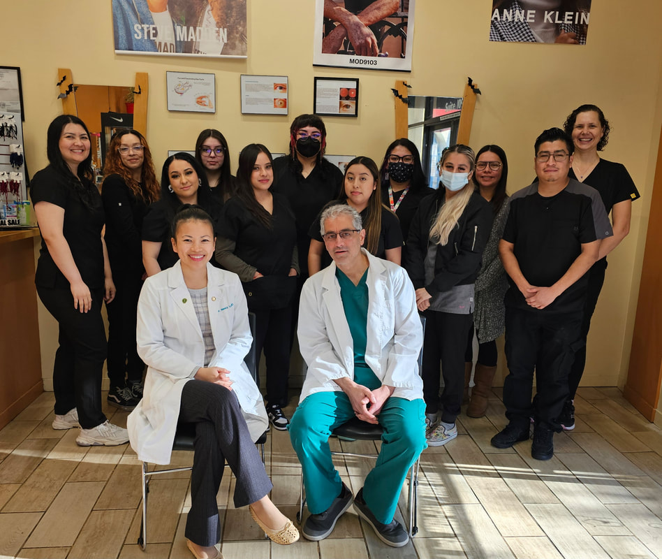
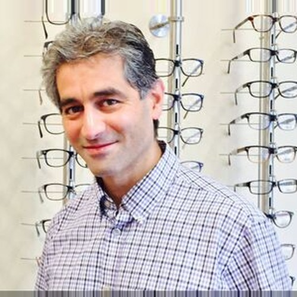
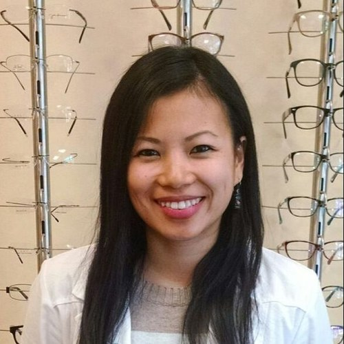

Aceptamos Medi-Cal
Exámenes de la vista, lentes y lentes de contacto
Cuidado de los ojos para toda la familia, en español y en inglés. Sirviendo a Oakland desde 2004.
- Abierto los 7 días de la semana
- Todo nuestro personal habla español
- Junto al BART de Fruitvale

En la plaza junto a la estación del BART de Fruitvale, cerca de la I-880.
Aseguranzas que aceptamos
¿No sabe qué cubre su plan? Llame al (510) 533-6567 y nosotros lo verificamos.
- Medi-Cal
- Medicaid
- Medicare
- VSP
- Alameda Alliance
- Blue Cross / Blue Shield
- EyeMed
Qué traer: su tarjeta de aseguranza y una identificación con foto.
¿No tiene aseguranza? Aceptamos efectivo, tarjetas, Apple Pay, Google Pay y CareCredit. También puede comprar un plan de visión con VSP.
Servicios
Exámenes de la vista
Revisión completa de su visión y la salud de sus ojos, con fotografía de retina y escáner OCT cuando se necesita.
Exámenes para niños
Exámenes cómodos para los niños, con resultados explicados a los padres en español o en inglés.
Lentes
Laboratorio propio para entrega rápida. Desde armazones económicos hasta Ray-Ban, Gucci, Versace, Oakley y Nike.
Lentes de contacto
Incluyendo lentes especiales SynergEyes y Ortho-K. Aceptamos recetas de otros doctores.
Glaucoma y enfermedades de los ojos
Todos nuestros doctores están certificados para tratar el glaucoma. También tratamos problemas por diabetes, infecciones y lesiones.
Cuidado antes y después de cirugía
Cuidado antes y después de la cirugía de cataratas o láser (LASIK).
Nuestros doctores
Todos graduados de UC Berkeley. Todo nuestro personal habla español e inglés.

Dr. Payam Zarehbin Irani, OD
Optometrista · FundadorSirviendo a Fruitvale desde 2004. Certificado en el tratamiento del glaucoma.

Dra. Nancy Luu, OD
OptometristaNacida en Oakland, con nosotros desde 2015. Certificada en glaucoma.
Dra. Patricia Hernandez, OD
OptometristaMás de 30 años de experiencia, con enfoque en el glaucoma y las enfermedades de los ojos.
Visítenos — junto al BART de Fruitvale
Dirección y horario
3301 East 12th Street #109
Oakland, CA 94601
📞 (510) 533-6567
Fax: (510) 533-6566
| Lunes – Viernes | 9:00 am – 6:00 pm |
|---|---|
| Sábado | 10:00 am – 3:00 pm |
| Domingo | 10:00 am – 3:00 pm |
Cerramos los días festivos principales. Recibimos pacientes sin cita cuando es posible — por favor llame primero.
Estacionamiento
- Lo más fácil: BART o el autobús — 12 líneas paran en el Fruitvale Village.
- Estacionamiento del BART: gratis los fines de semana y después de las 3 pm todos los días.
- Garaje del Fruitvale Village: los primeros 15 minutos gratis entre semana, después $1.00 por cada 15 minutos.
950+ reseñas en Google
Nuestros vecinos nos han calificado con 4.9 de 5 en 950+ reseñas de Google — ¡gracias, Fruitvale!
Es muy profesional. Llevamos muchos años yendo a la clínica y nos sentimos muy seguros con el doctor. Ha atendido a mi familia, a mis hijas, desde que eran pequeñas. Lo recomendamos 100%.
Recomiendo 100%. Todos fueron amables y acogedores, desde la recepción hasta la doctora que atendió a mi mamá. ¡Recibimos sus lentes en una semana!
Hicieron un trabajo increíble — me ayudaron a escoger los armazones y con unos ajustes de mi aseguranza, y la doctora me explicó muy bien mi vista y cómo cuidarla. ¡Todos fueron muy amables!
El mejor servicio que he recibido — para optometría, o para cualquier cosa en realidad. Amables, profesionales y con precios muy razonables.
¿Listo para su examen de la vista?
Haga su cita por internet o llámenos — podemos verificar su aseguranza antes de su visita.